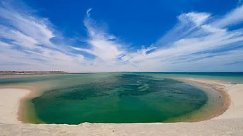

Réalisé par : ALAE ELASSAL
Pôles Industriels et Espèces
Le Maroc a divisé ses côtes en zones spécialisées :

Sud (Dakhla) : Huîtres et Moules

Nord (Méditerranée) : Loup et Daurade
SCRIPT AUDIO
Chargement...